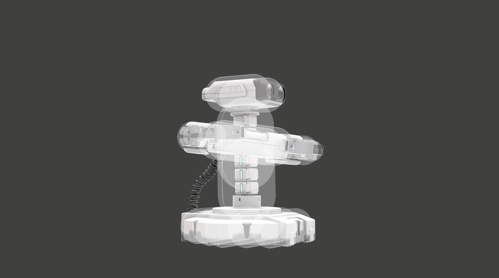

No new ROB News today!
Still curious about ROB? Click HERE for more!
When is ROB getting a SmashBros update anyhow? He *is* the strongest character in the game, but Steve from Minecraft is really pushing his luck and ROBs laser-finger is getting itchy...
We are currently begging for more ROB buffs. With more people, it might be doable. More specifically, we want this move to be unstoppable:
